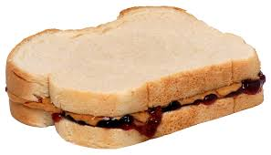

The Perfect PB and J

Description
This is a recipe for the best doggone peanut butter and jelly (aka PBJ) sandwich you WILL ever eat!!!
Ingredients
- Two slices of bread of your choice
- Peanut butter
- Aunt Mae's Jelly
Directions
- Lightly toast the bread.
- Use a knife to spread the peanut butter on both slices.
- Use a knife to spread the jelly atop the peanut butter.
- Place the slices of bread together.
- ENJOY!!!
Other PBJ Recipe